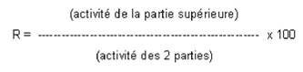
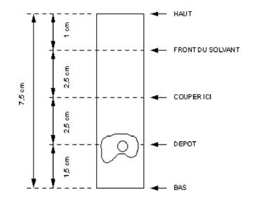

RÉSUMÉ DES CARACTÉRISTIQUES DU PRODUIT
ANSM - Mis à jour le : 05/08/2014
CARDIOLITE. Trousse pour la préparation du technétium-99m-sestamibi
2. COMPOSITION QUALITATIVE ET QUANTITATIVE
Tétrafluoroborate de tétrakis (2-méthoxy isobutyl isonitrile) cuivre (I) ...................................................... 1,0 mg
Chlorure stanneux dihydraté ........................................................................................................... 0,075 mg
Chlorhydrate de L-cystéine monohydraté ............................................................................................. 1,0 mg
Citrate de sodium .............................................................................................................................. 2,6 mg
Mannitol ............................................................................................................................................ 20 mg
Pour un flacon.
Ce produit ne contient pas de conservateur antimicrobien.
Pour la liste complète des excipients, voir rubrique 6.1.
Poudre pour solution injectable.
4.1. Indications thérapeutiques
Ce médicament est à usage diagnostique uniquement.
· Exploration myocardique
o Diagnostic et localisation de l'ischémie myocardique.
o Diagnostic et localisation de l'infarctus du myocarde.
o Evaluation de la fonction ventriculaire.
· Diagnostic du cancer du sein en complément des explorations conventionnelles lorsque celles-ci ne permettent pas de conclure.
· Localisation du tissu parathyroïdien lors d'une hyperparathyroïdie persistante ou récidivante.
4.2. Posologie et mode d'administration
Les activités recommandées en injection intraveineuse chez l'adulte de 70 kg sont les suivantes:
· Pour le diagnostic et la localisation de l'ischémie myocardique, on procède généralement à deux injections: l'une au cours d'une épreuve de stimulation soit par l'effort, soit pharmacologique, l'autre au repos.
· Ces deux injections peuvent être effectuées dans n'importe quel ordre et l'activité cumulée ne doit pas dépasser 1000 MBq.
Pour le diagnostic et la localisation de l'infarctus du myocarde: une seule injection de 200 à 750 MBq au repos est suffisante.
· Pour l'évaluation de la fonction ventriculaire: 750 à 1000 MBq sont injectés en embole pour une étude au premier passage.
· Pour le diagnostic du cancer du sein: une injection de 750 à 1000 MBq est effectuée dans le bras du côté opposé à la lésion.
· Pour la localisation du tissu parathyroïdien: 200 à 750 MBq sont injectés en intraveineuse.
Acquisition des images cardiaques
Le patient doit, si possible, être à jeun depuis au moins 4 heures lors de l'examen. Il est recommandé d'absorber une légère collation (comportant des aliments gras), ou de boire un verre ou deux de lait après l'injection du radiotraceur et avant l'acquisition des images. Cette précaution facilite la clairance hépatobiliaire du sestamibi (99mTc) et diminue ainsi l'activité de l'aire hépatique.
Le contraste optimal est obtenu lorsque l'on débute l'acquisition au-delà de la première heure après l'injection à l'effort. Si besoin est, les acquisitions peuvent être réalisées jusqu'à 10 heures après l'injection. L'acquisition des images peut se faire selon le mode planaire ou tomographique pour le diagnostic de l'ischémie ou de l'infarctus du myocarde. Toutes deux peuvent être effectuées en synchronisation avec l'électrocardiogramme.
Acquisition des images pour le diagnostic du cancer du sein
Les premières images sont réalisées 5 à 10 minutes après l'injection. La patiente est placée en décubitus ventral avec le sein examinée pendant. Une acquisition de profil de 10 minutes est réalisée pour chaque sein, le détecteur doit être le plus proche possible du sein examiné.
Ensuite une image antérieure est réalisée, la patiente étant en décubitus dorsal, les deux bras derrière la tête.
Acquisition des images pour la localisation du tissu parathyroïdien
L'acquisition dépend de la technique adoptée, les plus fréquemment utilisées sont la technique par soustraction et la technique en deux temps.
Technique par soustraction de l'activité de la glande thyroïde
Pour visualiser la glande, on peut utiliser soit l'iode 123, soit le technétium-99m. Lors de l'utilisation de l'iode 123, il convient d'administrer 10 à 20 MBq d'iodure de sodium (123I) par voie orale. 4 heures après, on injecte de 200 à 400 MBq de sestamibi (99mTc) et on procède immédiatement à l'acquisition en double isotope des images du thorax et du cou.
Lors de l'utilisation de technétium-99m, il convient d'injecter 40 à 150 MBq de pertechnétate de sodium (99mTc) et de procéder 20 minutes après à une première acquisition des images du thorax et du cou. On injecte ensuite de 200 à 400 Mbq de sestamibi (99mTc) et l'on procède immédiatement à une deuxième acquisition des images du thorax et du cou.
Technique en deux temps
On injecte 350 à 750 MBq de sestamibi (99mTc), on procède à la première acquisition des images du thorax et du cou 10 minutes après l'injection, puis 1 à 2 heures plus tard à une seconde acquisition de ces mêmes images.
Aucune connue à ce jour.
4.4. Mises en garde spéciales et précautions d'emploi
Mises en garde spéciales
Ce produit est un médicament radiopharmaceutique.
Les produits radiopharmaceutiques ne peuvent être réceptionnés, utilisés et administrés que par des personnes autorisées dans des services agréés.
Leur réception, leur stockage, leur utilisation, leur transfert et leur élimination sont soumis aux réglementations et aux autorisations appropriées des autorités compétentes.
Les produits radiopharmaceutiques doivent être préparés de manière à satisfaire à la fois aux normes de radioprotection et de qualité pharmaceutique. Les précautions appropriées d'asepsie doivent être prises afin de satisfaire aux exigences des Bonnes Pratiques de Fabrication pharmaceutique.
Précautions d'emploi
Afin de diminuer la dose de radiation et l'accumulation de la radioactivité dans la vessie, le patient doit boire abondamment et vider sa vessie aussi souvent que possible dans les heures qui suivent l'administration.
4.5. Interactions avec d'autres médicaments et autres formes d'interactions
Aucune connue à ce jour.
Lorsqu'il est nécessaire d'administrer des produits radiopharmaceutiques à la femme en âge de procréer, toute suspicion de grossesse doit être écartée. Tout retard de règles doit laisser supposer l'éventualité d'une grossesse jusqu'à preuve du contraire. Dans le doute, il est important que l'exposition aux radiations soit réduite au minimum pour obtenir les informations cliniques souhaitées. D'autres techniques n'utilisant pas de radiations ionisantes peuvent être envisagées si elles n'altèrent pas la qualité diagnostique.
Les examens utilisant des radionucléides chez la femme enceinte entraînent également l'irradiation du fœtus. Il ne faut réaliser au cours de la grossesse que les seules investigations absolument nécessaires lorsque le bénéfice probable dépasse les risques encourus par la mère et le fœtus.
Si l'administration d'un produit radioactif est indispensable, le lait peut être tiré avant l'injection et conservé pour être utilisé ultérieurement. L'allaitement doit être suspendu pendant au moins 12 heures après l'injection et le lait produit pendant cette période doit être éliminé. L'allaitement peut être repris lorsque l'activité dans le lait ne risque pas d'entraîner une dose de radiation pour l'enfant supérieure à 1 mSv.
4.7. Effets sur l'aptitude à conduire des véhicules et à utiliser des machines
Aucun connu à ce jour.
Pour tous les patients, l'exposition aux radiations ionisantes doit être justifiée par le bénéfice diagnostique attendu. La radioactivité administrée doit être telle que l'irradiation qui en découle soit aussi faible que possible, en gardant à l'esprit la nécessité d'obtenir le diagnostic requis.
L'exposition aux radiations ionisantes peut potentiellement induire des cancers ou développer des déficiences héréditaires. L'expérience montre que, pour ce qui est des examens diagnostiques en médecine nucléaire, la fréquence de ces effets indésirables est très faible en raison des faibles activités utilisées.
Pour la plupart des examens de médecine nucléaire à des fins de diagnostic, la dose de radiation délivrée (DE: dose efficace) est inférieure à 20 mSv. Des doses plus élevées peuvent être justifiées dans certaines circonstances cliniques.
Quelques cas de réactions secondaires ont été rapportés: dans les secondes qui suivent l'injection de sestamibi (99mTc), un faible pourcentage de patients (environ 5 %) a ressenti un goût métallique ou amer passager, ou présenté des céphalées et des bouffées vasomotrices passagères. Quelques cas de céphalées passagères, flush, œdème, inflammation au point d'injection, dyspepsie, nausées, vomissements, prurit, rash, urticaire, bouche sèche, fièvre, étourdissements, fatigue, dyspnée et hypotension ont été attribués à l'administration du produit radiopharmaceutique.
Quelques très rares cas (<0.01%) de convulsions ainsi que quelques très rares cas d'angiœdème ont été rapportés au décours de l'administration de sestamibi.
En cas de surdosage du sestamibi (99mTc), on recommandera une charge hydrique pour augmenter l'excrétion urinaire et la prise de laxatif afin de diminuer l'exposition aux radiations.
5. PROPRIETES PHARMACOLOGIQUES
5.1. Propriétés pharmacodynamiques
Produit radiopharmaceutique à usage diagnostique,
(V: Divers).
Après reconstitution grâce au pertechnétate (99mTc) de sodium, il se forme un complexe technétié (sestamibi (99mTc)) dont la structure est la suivante:
(99mTc) (MIBI)6+ (où MIBI = 2-méthoxy isobutyl isonitrile).
La captation tissulaire du sestamibi (99mTc) est en premier lieu sous la dépendance de la vascularisation qui est généralement augmentée dans le tissu tumoral. Au niveau cellulaire, la nature lipophile de la molécule sestamibi (99mTc) et sa charge positive lui permettent de franchir les membranes et de se concentrer dans la région la plus négative, qui est le compartiment mitochondrial.
Indications cardiaques
Le sestamibi (99mTc) est un complexe cationique qui a la propriété de s'accumuler dans les tissus myocardiques viables proportionnellement au débit coronaire régional et, ceci de façon analogue au chlorure de thallium (201TI).
Les images scintigraphiques obtenues chez l'animal et chez l'homme après administration intraveineuse de sestamibi (99mTc) sont comparables à celles obtenues avec le (201TI) que le tissu myocardique soit normal, soit le siège d'un infarcissement ou d'une ischémie passagère.
Indications sénologiques
Il a été montré que la concentration cellulaire en sestamibi (99mTc) pouvait être augmentée dans des échantillons de tissu tumoral mammaire, phénomène vraisemblablement en rapport avec la richesse mitochondriale et le fort potentiel transmembranaire des cellules tumorales.
Plusieurs études in vitro ont montré que le sestamibi (99mTc) est un substrat de la glycoprotéine-P. Une corrélation directe entre l'expression de glycoprotéine-P et l'élimination tumorale du sestamibi (99mTc) a été établie. Les images faussement négatives dans les tumeurs, en particulier supracentimétriques, pourraient résulter d'une surexpression cellulaire de la glycoprotéine-P.
5.2. Propriétés pharmacocinétiques
Le sestamibi (99mTc) est un complexe cationique qui se fixe dans le tissu myocardique viable en fonction du débit coronaire régional.
Captation myocardique
La captation myocardique, qui dépend du flux coronaire, est de 1,5 % de la dose injectée à l'effort, et de 1,2 % de l'activité injectée au repos. Des études chez l'animal ont montré que la captation n'est pas modifiée lorsque le fonctionnement de l'ATPase Na/K membranaire est inhibé. Cependant des cellules endommagées de façon irréversible ne fixent plus le sestamibi (99mTc). L'hypoxie réduit le taux d'extraction myocardique.
La clairance de la fraction myocardique est minimale et la redistribution est insignifiante pendant au moins 4 heures après l'induction d'ischémie instrumentale chez le chien. Cependant, certaines études expérimentales et cliniques ont signalé l'existence d'une redistribution dans les zones sévèrement ischémiques. Une éventuelle influence sur la qualité diagnostique du test n'a pas été établie.
Elimination
La clairance du sestamibi (99mTc) s'effectue principalement par le système hépatobiliaire. L'activité du sestamibi (99mTc) accumulée dans la vésicule biliaire est retrouvée dans l'intestin dans l'heure qui suit l'injection. Environ 27 % de l'activité injectée sont éliminés par voie rénale en 24 heures, et approximativement 33 % sont éliminés dans les selles en 48 heures. Cinq minutes après l'injection, environ 8 % de l'activité injectée persistent dans la circulation.
Demi-vie
La demi-vie myocardique du sestamibi (99mTc) est de 7 heures environ au repos comme à l'effort. La demi-vie efficace (qui tient compte de la demi-vie biologique et de la décroissance radioactive) est approximativement de 3 heures.
5.3. Données de sécurité préclinique
Les premiers symptômes de toxicité aiguë apparaissent suite à l'administration, chez l'animal, d'environ 7 mg/kg de sestamibi (ce qui correspond à 500 fois la dose habituelle de 0,014 mg/kg chez un homme adulte de 70 kg). Aucune toxicité n'est apparue lors de l'administration chez le rat et le chien de doses de 0,42 mg/kg (30 fois la dose maximale humaine recommandée), et de 0,07 mg/kg (30 fois la dose maximale humaine recommandée) pendant 28 jours. En cas d'administrations répétées, les symptômes d'intoxication apparaissent lors de l'administration de 150 fois la dose quotidienne pendant 28 jours.
L'injection extravasculaire chez l'animal induit de l'inflammation aiguë accompagnée d'œdème et d'hémorragie au site d'injection.
Aucune étude sur le sestamibi n'a été faite concernant son effet sur la reproduction.
Le sestamibi ne présente pas d'activité mutagène dans les tests de mutation génétique. A haute concentration, in vitro, il provoque une atteinte chromosomiale des lymphocytes humains. Ce phénomène n'a pas été vérifié in vivo.
Il n'y a pas eu d'études prolongées chez l'animal destinées à évaluer le pouvoir carcinogène du sestamibi.
Aucune connue à ce jour.
2 ans à compter de la date de fabrication, à température ne dépassant pas 25°C à l'abri de la lumière et de l'humidité.
10 heures après reconstitution à l'aide du soluté injectable de pertechnétate (99mTc) de sodium.
6.4. Précautions particulières de conservation
Conserver à température ne dépassant pas 25°C à l'abri de la lumière et de l'humidité, avant reconstitution.
Avant reconstitution, les constituants de la préparation ne sont pas radioactifs. Une fois ajouté, le soluté injectable de pertechnétate (99mTc) de sodium, il est en revanche nécessaire de conserver la préparation finale dans un conteneur de protection adéquat.
Après reconstitution, conserver à une température comprise entre 2°C et 8°C.
6.5. Nature et contenu de l'emballage extérieur
Flacon de 5 ml, en verre de type I, de la Pharmacopée Européenne, fermé par un bouchon en caoutchouc synthétique halobutylique et scellé par une capsule en aluminium.
6.6. Précautions particulières d’élimination et de manipulation
Tout produit non utilisé ou déchet doit être éliminé conformément à la réglementation en vigueur.
7. TITULAIRE DE L’AUTORISATION DE MISE SUR LE MARCHE
LANTHEUS MEDICAL IMAGING UK LTD
FESTIVAL HOUSE 39 OXFORD STREET
NEWBURY BERKSHIRE RG14 1JG
ROYAUME-UNI
8. NUMERO(S) D’AUTORISATION DE MISE SUR LE MARCHE
· 556 934-8: 24,675 mg de poudre lyophilisée en flacon de 5 ml. Boîte de 2 flacons.
· 557 102-6: 24,675 mg de poudre lyophilisée en flacon de 5 ml. Boîte de 5 flacons.
9. DATE DE PREMIERE AUTORISATION/DE RENOUVELLEMENT DE L’AUTORISATION
[à compléter par le titulaire]
10. DATE DE MISE A JOUR DU TEXTE
[à compléter par le titulaire]
Les calculs dosimétriques réalisés sur un patient d'une masse corporelle de 70 kg après injection intraveineuse de sestamibi (99mTc) sont les suivants:
Les données sont extraites de la publication n° 62 de la CIPR (Volume 22 (3), 1993): «Protection radiologique dans la recherche biomédicale».
Doses de radiations absorbées après injection du sestamibi (99mTc):
Estimation des doses de radiations absorbées en mGy/MBq
|
ORGANE |
AU REPOS |
SOUS STIMULATION |
|
Cerveau |
5,20 10-3 |
4,40 10-3 |
|
Côlon |
2,70 10-2 |
2,20 10-2 |
|
Estomac |
6,50 10-3 |
5,90 10-3 |
|
Foie |
1,10 10-2 |
9,20 10-3 |
|
Glandes salivaires |
1,40 10-2 |
9,20 10-3 |
|
Intestin grêle |
1,50 10-2 |
1,20 10-2 |
|
Moelle osseuse |
5,50 10-3 |
5,00 10-3 |
|
Muscles |
2,90 10-3 |
3,20 10-3 |
|
Œsophage |
4,10 10-3 |
4,00 10-3 |
|
Ovaires |
9,10 10-3 |
8,10 10-3 |
|
Pancréas |
7,70 10-3 |
6,90 10-3 |
|
Paroi cardiaque |
6,30 10-3 |
7,20 10-3 |
|
Paroi de la vésicule biliaire |
3,90 10-2 |
3,30 10-2 |
|
Paroi vésicale |
1,10 10-2 |
9,80 10-3 |
|
Peau |
3,10 10-3 |
2,90 10-3 |
|
Poumons |
4,60 10-3 |
4,40 10-3 |
|
Rate |
6,50 10-3 |
5,80 10-3 |
|
Reins |
3,60 10-2 |
2,60 10-2 |
|
Seins |
3,80 10-3 |
3,40 10-3 |
|
Sigmoïde |
1,90 10-2 |
1,60 10-2 |
|
Surface osseuse |
8,20 10-3 |
7,80 10-3 |
|
Surrénales |
7,50 10-3 |
6,60 10-3 |
|
Testicules |
3,80 10-3 |
3,70 10-3 |
|
Thymus |
4,10 10-3 |
4,00 10-3 |
|
Thyroïde |
5,30 10-3 |
4,40 10-3 |
|
Utérus |
7,80 10-3 |
7,20 10-3 |
|
Autres organes |
3,10 10-3 |
3,30 10-3 |
|
Dose efficace (mSv/MBq) |
8,5 10-3 |
7,5 10-3 |
La dose efficace après administration de 1000 MBq chez l'adulte (activité maximale recommandée) est de 8,5 mSv au repos et de 7,5 mSv sous stimulation.
12. INSTRUCTIONS POUR LA PREPARATION DES RADIOPHARMACEUTIQUES
La préparation ne contient pas de bactériostatique. Pour obtenir le sestamibi (99mTc), à partir de la trousse CARDIOLITE, on procédera comme suit:
1. Porter des gants imperméables tout au long de la procédure. Retirer la rondelle en plastique du flacon de CARDIOLITE et appliquer un tampon imbibé d'alcool sur la partie supérieure de l'embout pour en désinfecter la surface.
2. Placer le flacon dans un conteneur blindé approprié (protégeant des radiations) correctement étiqueté portant la date et l'heure de la préparation, le volume et l'activité.
3. A l'aide d'une seringue blindée stérile, recueillir de façon aseptique environ 1 à 3 ml de la solution stérile et apyrogène de pertechnétate (99mTc) de sodium (activité maximale 11.1 GBq).
4. Injecter aseptiquement la solution de pertechnétate de sodium dans le flacon placé dans son conteneur de plomb. Sans enlever l'aiguille, soustraire un volume d'air équivalent afin de rétablir dans le flacon la pression atmosphérique.
5. Agiter le flacon par retournement, 5 à 10 fois.
6. Placer verticalement le flacon avec son conteneur en plomb dans un bain-marie porté à ébullition, pendant environ 10 minutes. Ces 10 minutes ne seront décomptées qu'à partir du moment où l'eau recommence à bouillir.
Remarque: le flacon doit rester vertical pendant toute la durée de cette étape.
7. Retirer le flacon du bain-marie et le laisser refroidir pendant environ 15 minutes.
8. Examiner le contenu du flacon pour vérifier l'absence de particules ou de changement de couleur avant de l'administrer. Si l'un de ces problèmes se présentait, ne pas utiliser ce flacon pour l'injection.
9. Retirer aseptiquement le sestamibi (99mTc) en utilisant une seringue plombée stérile. Utiliser la préparation dans les 10 heures.
10. Avant d'administrer le sestamibi (99mTc) au patient, on vérifiera la qualité du marquage par chromatographie en couche mince, selon la procédure suivante:
Méthode pour vérification de la qualité de marquage de CARDIOLITE par le technétium-99m (Radio-chromatographie en couche mince):
Matériel
1. Plaque d'oxyde d'aluminium, prédécoupée de 2,5 cm x 7,5 cm.
2. Alcool absolu.
3. Activimètre pour mesurer la radioactivité dans la gamme 0,7 - 12 GBq.
4. Seringue de 1 ml, aiguille d'un calibre 22-26 gauge.
5. Une petite cuve de développement avec couvercle (un bécher de 100 ml couvert d'un film étirable convient).
Mode d'emploi
1. Verser suffisamment d'alcool dans la cuve de développement (bécher) pour obtenir une hauteur de solvant de 3-4 mm. Couvrir la cuve (bécher), avec du film étirable et attendre environ 10 minutes.
2. A l'aide d'une seringue de 1 ml et d'une aiguille (G 22-26), déposer une goutte d'alcool sur la plaque à 1,5 cm de l'extrémité inférieure. Ne pas chauffer.
3. Déposer une goutte de la préparation sur la goutte d'alcool. Laisser sécher. Ne pas chauffer.
4. Laisser migrer le front du solvant à une distance de 5 cm de la goutte.
5. Couper la bandelette à 4 cm de l'extrémité inférieure et mesurer le taux de comptage de chaque partie dans l'activimètre.
6. Calculer le rendement de marquage R comme suit:

Le rendement de marquage doit être supérieur à 94 %, dans le cas contraire, on doit jeter la préparation.
Ne pas utiliser la préparation si le rendement de marquage est inférieur à 94 %.
Exigences supplémentaires
L'administration de produits radiopharmaceutiques présente certains risques pour l'entourage du patient. Ceux-ci résultent de l'émission de radiations externes ou de la contamination par les urines, les vomissures, les expectorations, etc. Il faut donc prendre toutes les mesures de radioprotection requises par les législations ou les réglementations nationales. L'élimination des déchets doit se faire en respectant les règlements nationaux et internationaux.
Diagramme de radio-CCM

Liste I.
Médicament réservé à l'usage hospitalier.
Les produits radiopharmaceutiques ne doivent être utilisés que par des personnes qualifiées. Ils ne peuvent être délivrés qu'à des praticiens ayant obtenu l'autorisation spéciale prévue à l'article R 1333-24 de la Santé publique.